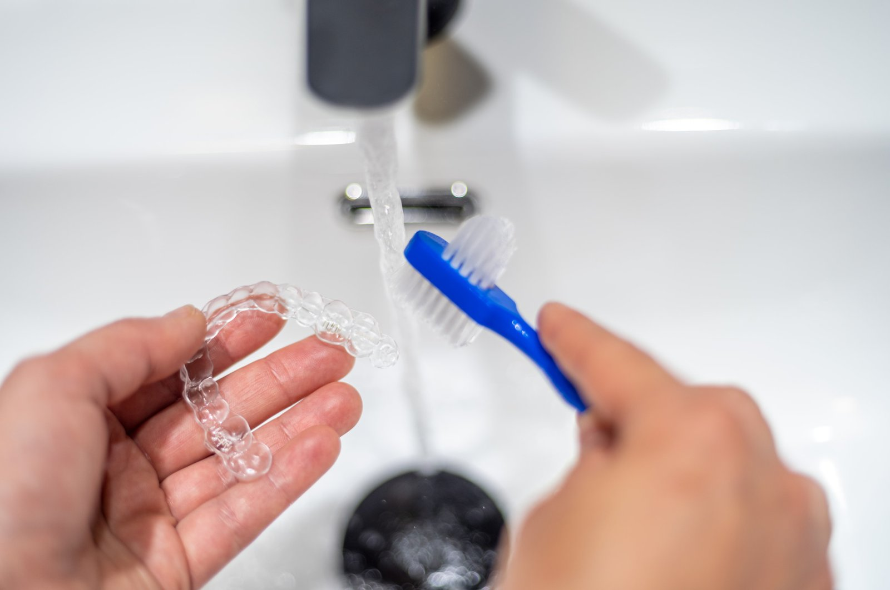
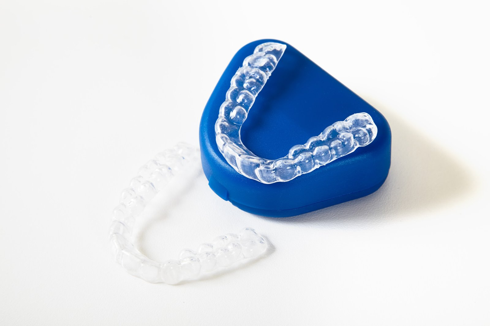

Keep your smile sparkling and your treatment on track with the ultimate guide to aligner hygiene, as recommended by orthodontic specialists like Dante Gonzales. Maintaining those clear trays is about aesthetics and an important step in protecting your oral health. When you prioritise cleanliness, you ensure your breath stays fresh and your teeth remain cavity-free throughout your treatment journey.
Why You Should Clean Invisalign Aligners?
Invisalign trays create a sealed space around teeth in which bacteria and sugars become trapped between plastic and enamel. Without daily cleaning, these particles create plaque buildup that forms quickly and causes:
- Cloudy or yellow trays
- Unpleasant taste
- Bad breath
- Gum irritation
- Cavities
- Staining
How Often Should You Clean Invisalign?
A clear schedule keeps your Invisalign aligners fresh, transparent, and free from plaque buildup, a routine consistently advised by experts from Dante Gonzales Orthodontics.
- Clean your aligners at least twice daily: Morning and night cleaning removes bacteria, saliva film, and debris that collect while trays sit against teeth for long hours, as recommended by orthodontists and dental specialists.
- Rinse after every meal: Lukewarm water helps remove food particles and reduces the risk of plaque buildup before reinserting trays.
- Soak your aligners 2 to 3 times per week: A cleaning solution or Invisalign cleaning crystals disinfect the plastic and help remove stains that brushing alone cannot lift, a method frequently suggested by orthodontic specialists.
- Brush teeth before reinserting aligners: Clean teeth prevent trapping sugars and bacteria between enamel and trays.

Daily Cleaning Routine: Step-by-Step Guide
Follow this structured approach advised by Dante Gonzales Orthodontics to improve results and protect your Invisalign from damage.
Step 1: Rinse Immediately After Removal
Each time trays leave the mouth, rinse under lukewarm water to remove saliva and loose debris before buildup forms. Avoid hot water as it can warp and distort Invisalign trays, which affects fit and treatment progress monitored by orthodontists and Invisalign experts.
Step 2: Gently Brush With A Soft Toothbrush
Use a soft bristled toothbrush to clean Invisalign aligners, which prevents scratching and keeps trays smooth, a technique commonly advised by dental specialists and orthodontic providers.
- Use light pressure
- Brush inside and outside surfaces.
- Focus on areas touching the teeth.
Step 3: Rinse Thoroughly
After brushing, rinse again with lukewarm water to remove loosened plaque and cleaning residue. Place trays inside a clean Invisalign case if not wearing them.
Soaking Methods: Deep Cleaning For Invisalign
Daily cleaning removes surface debris, while soaking targets deeper buildup and disinfects the plastic, so use a cleaning tub filled with lukewarm water for safe soaking with solutions such as those recommended by orthodontists and Invisalign specialists.
Invisalign Cleaning Crystals
Invisalign cleaning crystals are designed for Invisalign trays and retainers to dissolve in water to create a gentle cleaning solution.
- Fill a cleaning tub with lukewarm water.
- Add the crystals
- Place aligners in the solution.
- Soak according to instructions in the package.
- Rinse thoroughly before wearing.
Cleaning crystals help remove stains and bacteria without damaging plastic. Soaking 2 to 3 times weekly keeps trays clear and fresh.
Denture Cleaners
Denture cleaners such as Efferdent or Polident tablets can clean Invisalign trays to break down plaque buildup and reduce odour.
- Dissolve the tablet in lukewarm water.
- Soak trays as directed in the package
- Rinse completely before use
Hydrogen Peroxide Solution
A diluted hydrogen peroxide soak supports the hygiene of the Invisalign, a method occasionally recommended by dental clinicians for aligner maintenance.
- Mix equal parts of hydrogen peroxide and lukewarm water
- Soak trays for 15 to 20 minutes
- Rinse thoroughly before placing trays in the mouth
White Vinegar Solution
Mineral buildup and hard deposits in Invisalign respond well to diluted vinegar, as discussed by orthodontic specialists and dental experts.
Mix one part white vinegar with three parts warm water. Soak for 15 to 20 minutes, then rinse well.
Avoid These Cleaning Materials
Certain cleaning habits weaken the plastic material and affect how Invisalign aligners fit over your teeth, so avoid these materials:
- Toothpaste: Toothpaste scratches plastic and causes cloudiness, which traps bacteria and stains easily.
- Hot Water: Hot water warps aligners and changes their shape, which interferes with treatment accuracy monitored by orthodontic specialists.
- Mouthwash: Alcohol based mouthwash dries the plastic in aligners and leads to cracks. Never soak aligners in mouthwash, as colored mouthwash stains clear aligner surfaces.
- Harsh Chemicals and Scented Soaps: Harsh chemicals weaken plastic, and scented soaps leave residue and an unpleasant taste in the mouth.
Cleaning Invisalign Retainers After Treatment
Invisalign retainers require the same cleaning routine as active trays to stay functional, a guideline reinforced by Dante Gonzales Orthodontics. Retainers worn overnight collect bacteria and plaque that can affect your dental health. Keeping these devices clean protects your alignment results and maintains oral health for years under the supervision of orthodontic specialists.
Retainers Clean Routine
- Morning rinse: Use lukewarm water every morning after removal.
- Gentle brushing: Use a soft bristled toothbrush to clear away overnight buildup.
- Weekly soak: Use a cleaning solution several times weekly for deep disinfection.
- Secure storage: Place the device in a protective case during the day.
Ultrasonic Cleaning Devices: Advanced Option
Ultrasonic devices use vibration waves to loosen buildup from plastic trays without manual effort, a technology discussed by orthodontists and dental specialists for enhanced aligner hygiene. These devices reach small crevices that might be missed during aggressive brushing. While effective, they should complement rather than replace your daily manual cleaning.
How Ultrasonic Cleaning Works?
- Preparation: Fill the device with lukewarm water.
- Addition: Add an approved cleaning solution or crystal packet.
- Placement: Submerge the aligners fully inside the tub.
- Cycle: Run the cleaning cycle as instructed by the manufacturer.
Ultrasonic cleaning removes stubborn plaque buildup efficiently. Consult Dante Gonzales Orthodontics before using advanced cleaners to ensure compatibility with your specific trays.
Storage Tips: Protecting Invisalign Trays
Safe storage prevents contamination and physical damage to your orthodontic equipment, a preventive measure consistently emphasised by orthodontists and dental professionals. Leaving trays exposed on counters or wrapping them in tissues leads to loss or breakage. Proper habits ensure your trays remain clean and ready for use throughout treatment.
- Avoid heat: Keep trays away from direct sunlight or hot surfaces to prevent warping.
- Maintain the case: Clean the interior of your storage container regularly.
- Air dry: Open cases fully to air dry after washing to prevent mould growth.
Signs Your Cleaning Routine Needs Improvement
Cloudy trays and persistent odour indicate that your current cleaning routine needs an update. If the plastic feels rough or looks yellow, bacteria have likely begun to colonise the surface.
- Yellow tint or discolouration.
- Rough texture on the inside of the trays.
- Persistent bad breath even after brushing teeth.
- Visible plaque buildup in the corners of the aligner.
Adjust your cleaning methods if these signs appear. Increasing soaking frequency and reviewing your brushing technique solves these issues quickly, as advised by orthodontic specialists and Invisalign experts.
Travel Checklist for Cleaning Invisalign
Travel requires preparation to maintain hygiene while you are away from home. Packing a dedicated kit ensures you never have to skip a cleaning session due to a lack of supplies.
- Soft bristled toothbrush for portability.
- Portable cleaning tub for soaking.
- Invisalign cleaning crystals for deep cleans.
- Protective aligner case to prevent loss in hotels or restaurants.
Rinse with lukewarm water after every meal during your trip. Soak the trays when you return to your room to keep your Invisalign clean, even during busy travel days.
Experience the Smile that Expert Care Makes with Dante Gonzales Orthodontics
Keeping your aligners clean is just as important as wearing them consistently, and expert guidance makes that process simple and effective. With professional oversight from experienced orthodontic specialists, you can protect your oral health while achieving precise smile results. Trust Dante Gonzales Orthodontics in Dublin and Tracy, CA, for advanced Invisalign care, personalised hygiene guidance, and dedicated support throughout every stage of their smile transformation.

Frequently Asked Questions (FAQs)
1. How Should I Clean My Aligners and Retainers to Keep Them Fresh?
Orthodontists recommend rinsing your aligners every time you remove them and brushing them gently with a soft-bristled toothbrush and clear liquid soap. Daily or weekly soaks in hydrogen peroxide diluted with lukewarm water or specialised cleaning crystals will further eliminate bacteria and maintain transparency.
2. Can I Use My Regular Toothpaste to Clean My Invisalign?
You should avoid using toothpaste to clean your Invisalign aligners because the abrasive ingredients can cause micro-scratches on the surface. These tiny scratches make the material appear cloudy and create porous areas where plaque and bacteria can easily accumulate.
3. What Are the Most Common Mistakes to Avoid When Cleaning My Aligners?
Using hot water is a significant error as it can warp the plastic, ruining the precise fit required for your treatment. Additionally, neglecting regular cleaning allows for plaque buildup, which leads to tooth decay and persistent bad breath.
4. Is It Okay to Use Baking Soda as One of My Cleaning Methods?
Baking soda can be an effective, non-toxic option when dissolved thoroughly in water to create a soaking solution. However, you must ensure it is fully diluted to prevent any gritty residue from scratching the aligner material during the soaking process.
5. How Do I Store My Aligners Safely When I’m Eating or Drinking?
Always place your Invisalign aligners in a dedicated protective case, such as a white or lime green aligner case, to prevent environmental contamination. Storing them in a case rather than a napkin ensures they are not accidentally discarded and remains a standard recommendation from dental specialists.
Ready to start your smile journey?
Book a complimentary consultation with Dr. Dante Gonzales in Dublin or Tracy, CA. We will review your case and map out a clear, personalised treatment plan.
Request ConsultationThis article is for general education and is not a substitute for a professional orthodontic evaluation. Treatment recommendations and outcomes vary from person to person.